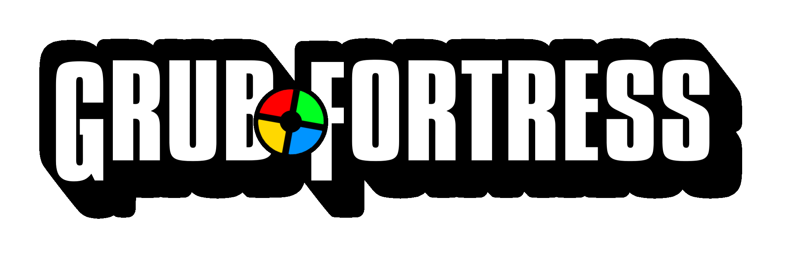

Download Grub Fortress.
Welcome to the official download page for Grub Fortress
Latest Version.
Build: TF:Grub Open Alpha Build 0015
Build Date: 05.12.2025
Installation Instructions
Step 1: Download the Source SDK
to run TF:Grub, you need to have the Source SDK Base 2013 Multiplayer Installed in order to launch the mod.
IMPORTANT: Several TF2 Sourcemods required the SDK 2013 branch to be set to previous2021 to function properly, TF:Grub is made on the new SDK, and requires the branch to be set to
None or Default Public Version, please keep that in mind
Step 2: Downloading TF:Grub
to download TF:Grub, you may use the TF:Grub downloaderStep 3: Restart Steam
after the installer is finished installing TF:Grub, make sure to restart steam to make sure it appears in your steam library
Requirements
- Steam installed
- Source SDK Base 2013 Multiplayer installed
- Team Fortress 2 installed
Any Issues with the Downloader?
Troubleshooting
If the game doesn't appear in your Steam library after installing, make sure:
- The mod installed into the correct sourcemods folder
- Steam was restarted after installation
If the game doesn't launch, make sure:
- You have the correct beta branch of Source SDK Base 2013 Multiplayer selected (None)